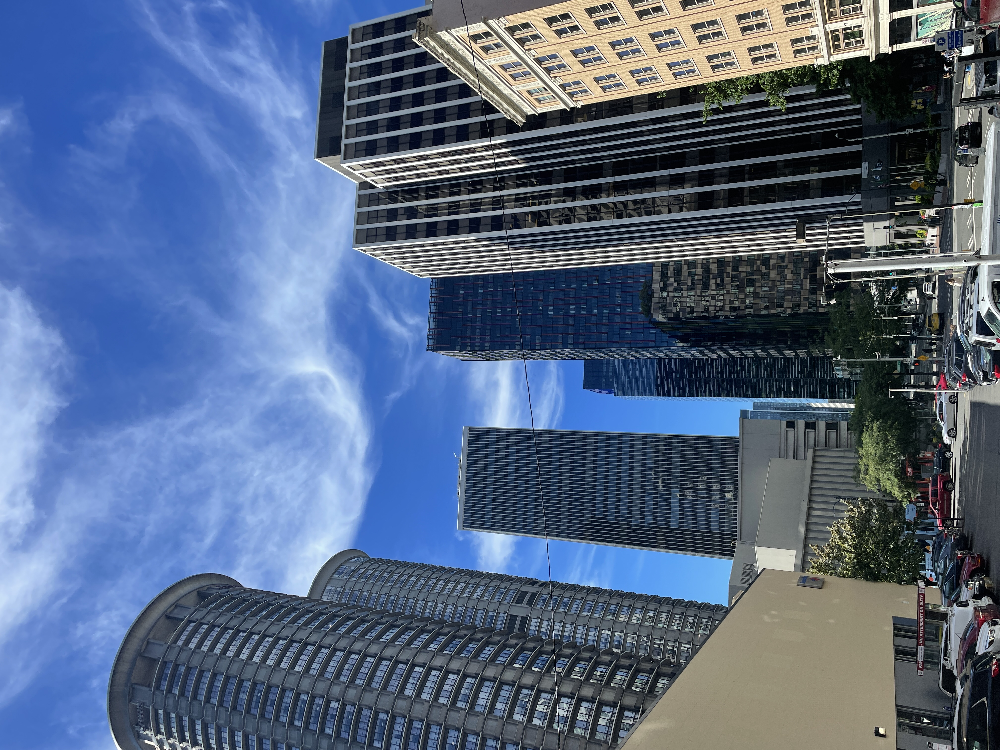
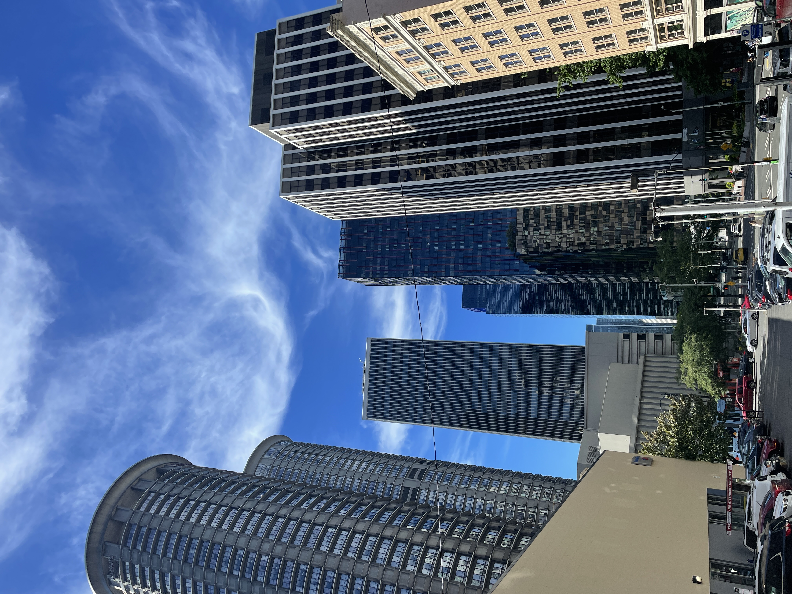
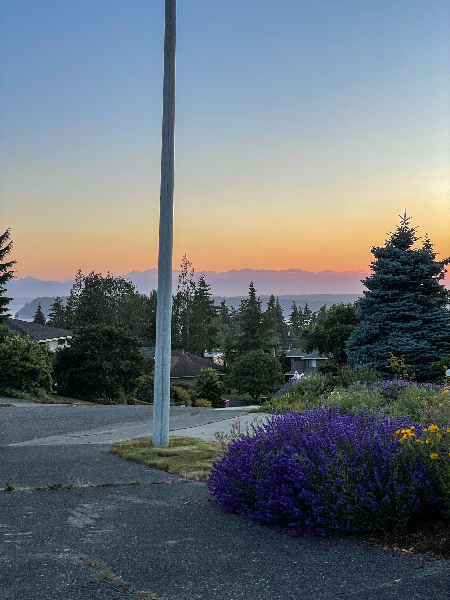
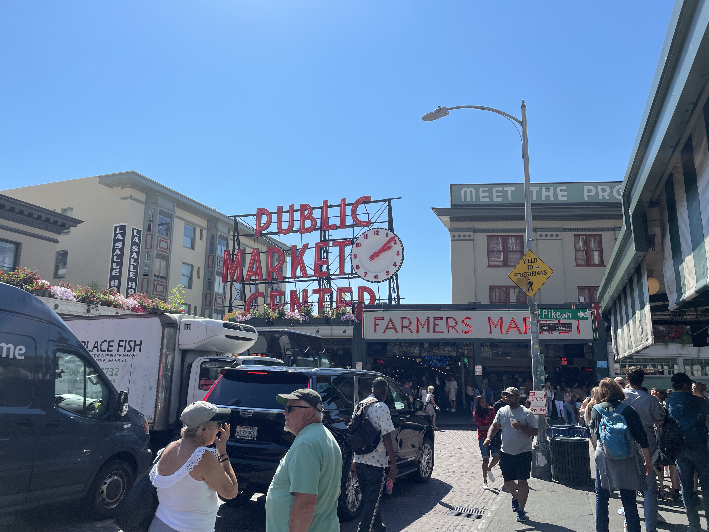

Seattle, Washington
I spent the summer of 2022 in the Seattle area, specifically Mukilteo, Washington! I honestly loved it, It was my first time on the west coat and such an amazing experience overall. I especially loved watching the sunset on the lake in Mukilteo, visiting Pike Place Market, and just exploring downtown Seattle! - Taz
 


